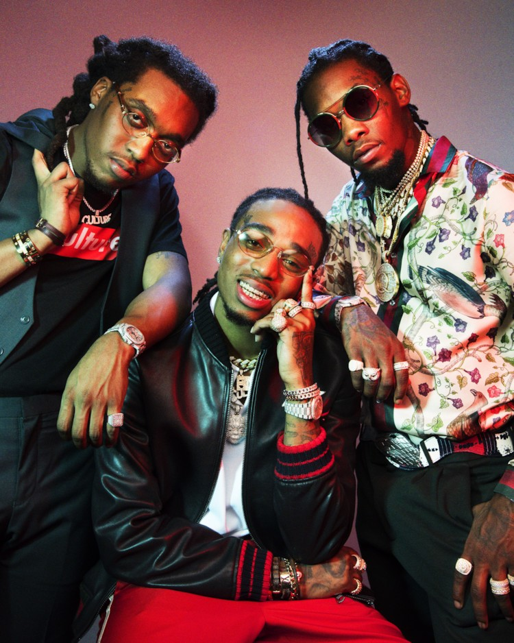

- 21 savage
- Travis Scott
- Migos
who is Migos?
Migos의 사진

21 savage의 어린 시절
Migos는 Quavo, Offset, Takeoff로 구성된 힙합 그룹이다.
지금까지도 힙합씬에 엄청난 영향을 끼치고 있는 Versace 등의 곡에서
차차 입지를 넓혀 나가다가 2017년 2월 Culture 앨범을 발매하고 호평을 받으며
힙합씬에서 가장 핫한 아티스트가 된다.
21 savage 의 디스코그래피
정규
Yung Rich Nations (2015)
Culture (2017)
Culture II(2018)